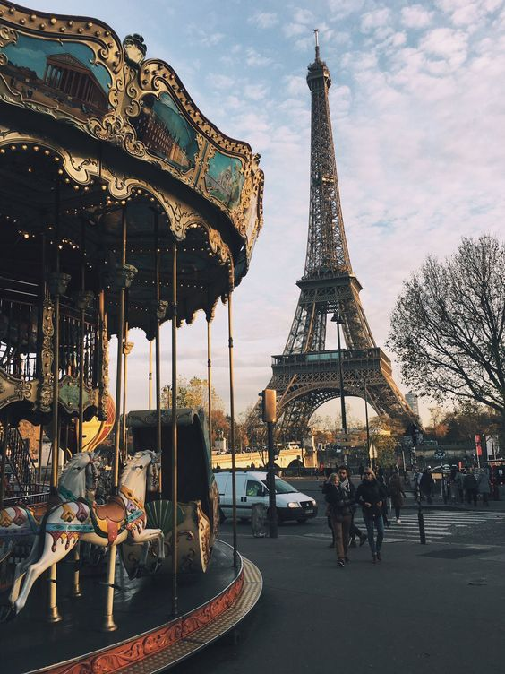
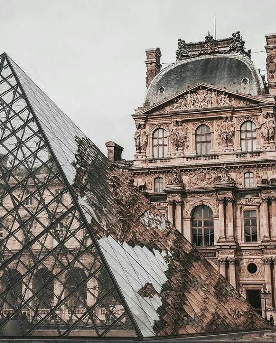
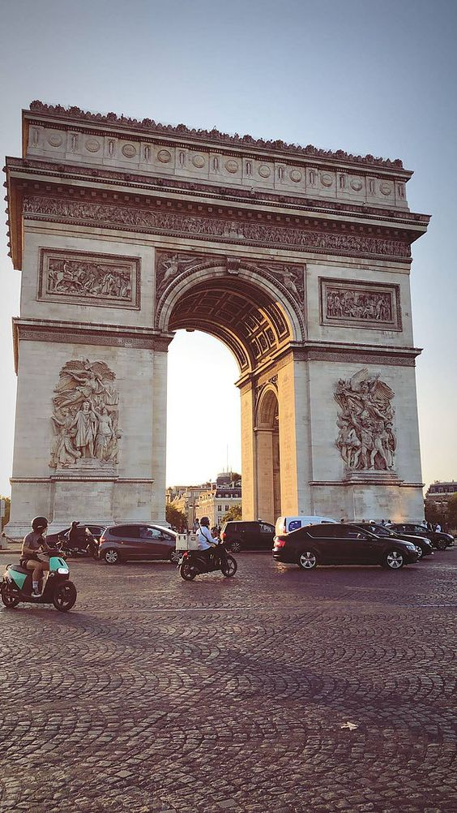

La torre eiffel

La torre Eiffel (tour Eiffel, en francés), inicialmente llamada la tour de 300 mètres (torre de 300 metros), es una estructura de hierro pudelado diseñada por los ingenieros Maurice Koechlin y Émile Nouguier, dotada de su aspecto definitivo por el arquitecto Stephen Sauvestre y construida por el ingeniero francés Alexandre Gustave Eiffel y sus colaboradores para la Exposición Universal de 1889 en París.
Museo Louvre

El Museo del Louvre (Musée du Louvre, en francés) es el museo nacional de Francia consagrado al arte anterior al impresionismo, tanto bellas artes como arqueología y artes decorativas. Es uno de los más importantes del mundo. Está ubicado en París (Francia), en el antiguo palacio real del Louvre, y actualmente promueve dos subsedes, en Lens (Francia) y en Abu Dabi (Emiratos Árabes Unidos)
Arco del triunfo

El Arco de Triunfo de París (en francés, Arc de triomphe de l'Étoile o Arc de Triomphe) es uno de los monumentos más famosos de la capital francesa y probablemente se trate del arco de triunfo más célebre del mundo. Construido entre 1806 y 1836 por orden de Napoleón Bonaparte para conmemorar la victoria en la batalla de Austerlitz, está situado en el VIII Distrito de París, sobre la plaza Charles de Gaulle ―antiguamente denominada plaza de la Estrella o, en francés, Place de l’Étoile, rediseñada por Haussmann―, en el extremo occidental de la avenida de los Campos Elíseos, a 2,2 km (kilómetros) de la plaza de la Concordia, ubicada en el extremo oriental de dicha avenida. Tiene una altura de 50 m (metros), un ancho de 45 m y una profundidad de 22 m. La bóveda grande mide 29,19 m de alto por 14,62 m de ancho, mientras que la pequeña mide 18,68 m de alto por 8,44 m de ancho. Es gestionado por el centro de los monumentos nacionales.
Video de París
Visitas anuales de cada lugar
|
No.
|
Lugar
|
Visitas anuales
|
| 1 |
La torre Eiffel |
7,000,000 |
| 2 |
Museo Louvre |
10,000,000 |
| 3 |
Arco del triunfo |
9,500,000 |